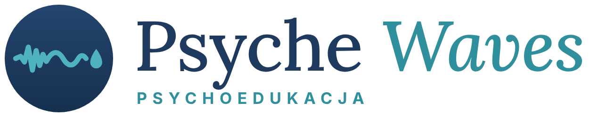
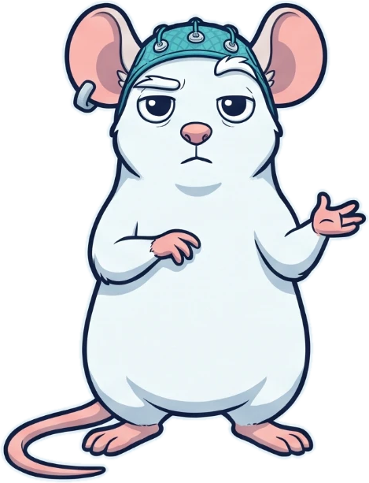
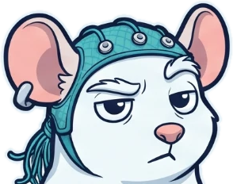

Karta pracy z Placebo · 6–10 latDo wypełnienia razem z dorosłym. Nie ma złych odpowiedzi.

Zakreśl jedną.
Pokoloruj miejsca: brzuch, gardło, ręce, głowa, nogi.
Dziś moja fala jest…
Pomaga mi, gdy…
Wyobraź sobie kroplę. Wdech nosem, kropla rośnie (licz do 3). Wydech ustami, kropla spada (licz do 4). Zrób to trzy razy i zamaluj kroplę po każdym razie.
Zakreśl to, co pomaga Tobie. Możesz wybrać kilka rzeczy.
Mój własny pomysł:

Ktoś mówi: „Jak zjesz tę kulkę, będziesz najmądrzejszy w klasie!” Jakie pytania zada detektyw?
Usiądź obok i pozwól dziecku wybierać samodzielnie. Każda odpowiedź jest dobra, a „burza” to też informacja. Zdanie „Mam dużą falę” możecie ćwiczyć w spokojny dzień, żeby było łatwiej użyć go w trudny.
Karta jest materiałem edukacyjnym: nie służy do diagnozy ani terapii. Jeśli stan dziecka Cię niepokoi, porozmawiaj ze specjalistą.
Pomoc: 116 123 Telefon Zaufania dla Osób Dorosłych · 116 111 Telefon Zaufania dla Dzieci i Młodzieży · 800 199 990 Uzależnienia · 112